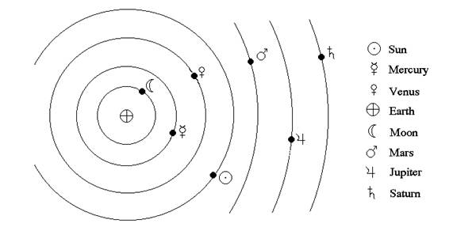
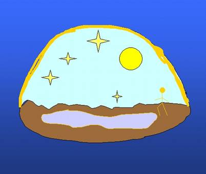
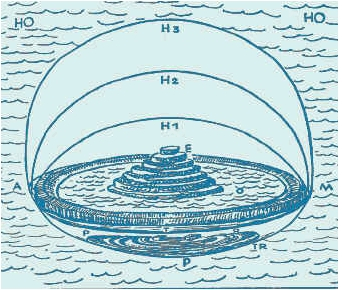
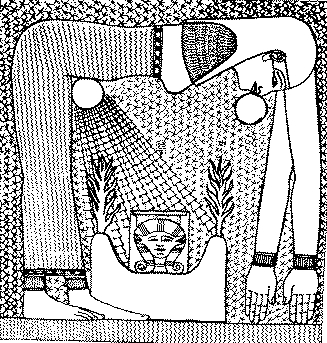

|
|
|
|
|
|
|
|
|
|
|
|
|
|||
|
|
||||
|
|
Cosmology and Cosmogony of Ancient Civilizations
Brent Meeker

COSMOLOGY AND COSMOGONY OF ANCIENT CIVILIZATIONS
IntroductionCosmology is the study of the structure universe as a whole. Cosmogony is about the origin of the universe. Man has been intrigued by the questions of cosmology and cosmogony from the beginning of recorded history and not doubt before. Often wrong, but never uncertain, man has believed many incompatible answers. But there have been certain common patterns and rationales in these answers. The variations perhaps reflect differences in the environment, the social order, and the economy of the different civilizations. In this paper I consider only the civilizations of ancient Mesopotamia, Egypt, and Greece. Before these civilizations arose, men no doubt speculated on the world beyond their immediate experience, but they left no records.
Cities first developed around agriculture based on irrigation. In Mesopotamia there was fertile ground that was easily worked and rivers that periodically flooded over their shallow banks and watered the grasses on the surrounding plain. This no doubt suggested the idea of irrigation. Irrigation required planning and cooperation of large numbers of people – and at the same time it provided a lot of food that could support large numbers of people. So the first cities developed around irrigated agriculture in Mesopotamia, along the Nile, and in the Indus river valley. This was a drastic change in the human way of life. From hunter-gatherer to hunter-farmer to herder-farmer the changes were smaller and mainly quantitative – the work and personal relations must have been pretty much the same: family and neighbors = tribe, division of labor by man/woman/child. But the city based on irrigated agriculture would have meant a drastic change in work and relations. Division of labor was more complex with different working classes and different jobs – slaves, artisans, builders, planners, accountants, soldiers, priests, administrators, tax collectors, judges,… This necessitated many social inventions: writing and accounting, contracts, laws, …and most significant of all, hierarchy. This was reflected in the gods being promoted from nature spirits and household genies to rulers and creators of the world.
Mesopotamia
The Mesopotamian civilizations of Sumer, Babylon, Cannan, and Judea all had a common concept of the cosmos. First, it was based on water as the fundamental primordial substance. All philosophers, down to the present, have had difficulty with the idea of the world arising from nothing. In modern theories, in which “the world” includes literally everything, this difficulty is acute. But the ancients seemed content to start with a formless pervasive substance. But why water?
Water was a reasoned choice. First, water was essential to life and perhaps even embodied a vital principle. All living things were wet inside. Second, water was the only substance known to the ancients that existed in all three phases; liquid, solid, and vapor. Of course they didn’t really know of the existence of water vapor as a gas, but they must have observed that boiling water produced rising steam, that water evaporated, and also that water condensed on cool surfaces as dew. It probably never snowed or froze in Egypt, but from the mountains of northern and eastern Mesopotamia people would have known of snow and ice and how it changed into water. Third, water came both up from under the ground and down as rain. So it was natural to conceive of water as surrounding the Earth (i.e. that part of the world where men dwelt).
But the Earth was not flooded, even though it was surrounded by water. So the basic feature of Mesopotamian cosmology was the firmament, or vault of heaven, that created a dry space above the Earth. The Earth was a disk, and the firmament rested on the Earth around its edge – as was obvious to any Mesopotamian scanning the horizon. Beneath the Earth were the waters of the abyss. The Earth had some thickness as was obvious from digging and from caves. Within the thickness of the Earth-disk was the underworld. So the world looked like figure 1.  Figure 1. Ancient cosmos. SumerAlthough they agreed on this basic cosmology, the various Mesopotamian cultures differed as to details and accounts of how it came to be. The Sumerian cosmogony begins with the primordial sea called, Nammu the mother of all. Nammu creates an (heaven) and ki (earth). An, the sky, is a hard metallic shell lies on the earth, ki. The union of an and ki produce Enlil, the god of air, wind, and storm. Enlil lifts an away from ki, filling the space in which humans live. The space is filled with lil (atmosphere). The brighter parts of the lil form the sun, moon, and stars. Enlil also creates all living things. He also invents all the tools used by man and teaches him to use them. But it isn’t Enlil that creates man; it is his son Enki.
Enki is the god of the abyss (the sea beneath the Earth). He provides the waters of the Tigris and Euphrates – which the Sumerians probably supposed to have come from underground. Enki created mankind from clay in the image of the gods. Clay is probably the natural choice since it is what a man could mold into a complex form and it is a mixture of water and other things. The Sumerians also explained why the form of man was the same as that of the gods. Men were supposed to relieve the gods of labor; so it makes sense that they would have the form of gods in order to perform the same tasks.
There is a related myth in which Enlil and the other more powerful gods had enslaved the other gods and forced them to work for them. The lesser gods rebelled while Enlil slept and demanded relief. Enlil is roused and the there is a negotiation. The goddess Mama (good name!) creates humans in male-female pairs from clay mingled with the blood of the god Illuwe who is sacrificed for the purpose. The humans are to replace the enslaved gods as laborers.
Both versions of the origin of man are related to slavery, clearly reflecting the Sumerian economy in which slaves labored for the good of the priesthood and king.
BabylonLike the other Mesopotamian cosmogonies, Babylon’s begins with water. But there are two kinds of water: fresh, deified in Apsu (male), and salt, deified in Tiamat (female). They call into being a whole genealogy of gods. The new gods were noisy and Apsu complains that he gets no rest either by day or night. This is significant since the gods are still existing in the primordial waters; sun, moon, and earth have not yet been created. This shows that the Babylonians were not aware that day was caused by the sun. They thought of day and night as fundamental and the sun as a mere marker of day. Apsu proposes to kill off the children gods that he and Tiamat have produced. But the gods take measures to prevent this and kill first Apsu and then Tiamat. The latter is accomplished by Marduk who is then the chief god. He splits Tiamat’s body in two ‘like and oyster’. One half becomes the firmament and the other half becomes the Earth. Tiamat’s spittle provides rain and clouds. Her head becomes mountains and out of her eyes flows the Tigris and Euphrates rivers.
The Babylonians had a relatively complex model of the world, as shown in figure 2.  Figure 2. Babylonian universe.
It was a six-level universe with three heavens and three earths: two heavens above the sky, the heaven of the stars, the earth, the underground of the Apsu, and the underworld of the dead. The Babylonians made precise observations and made records; so they recognized the pattern of motion of the heavenly bodies. They attributed this to Marduk. The Babylonian religion presents Marduk as bringing order from chaos; good from evil. As in the Sumerian story, Marduk creates man to labor for and serve the gods. The social as well as cosmic order is ordained by Marduk - to disobey is to invite chaos. The Babylonians had a strong sense of sin and rituals lasting many days were used to expiate it. Completion of the ritual marked a rebirth of the world, new and free from sins of the past.
Canaan In Canaan the myth doesn’t start with the undifferentiated primordial waters. It begins with the world being controlled by Yam, the god of waters. There is a conflict with other gods and the earth was divided among them. In the usual tale of bloody usurpation, Yam is replaced by Ba’al, the god of rain. Ba’al is later killed by Mot, the earth god. Later Ba’al appears again (presumably the story of his resurrection has been lost) and kills Mot. There’s nothing in the surviving Canaanite myth that addresses the origin of the physical world or the creation of man.
HebrewThe Hebrew origin myths come down in the form of two different accounts in Genesis. The newer one appears first in the bible, Genesis 1:1 to 2:4. It is referred to as the “Preistly” or “P” account. It is very close to the Babylonian account and was probably learned by the Hebrew priests during Jewish captivity in Mesopotamia. It begins with a formless void of water. Yaweh’s spirit (i.e. breath, like Enlil the air) moves over the waters. He creates night and day; before creating the Sun, just as in the Babylonian myth. He creates the firmament that separates the waters and creates the Earth. He brings forth vegetation first and then produces the Sun, Moon, and stars. After creating all the other living things he makes man and woman and tells them to multiply and dominate the Earth. Here is a significant break from the other Mesopotamian stories. In this version humans are not produced to serve the gods but are given dominion over Yaweh’s creation. Yahweh appears sometimes as one of the Canaanite pantheon in place of Ba’al. He fights with Yam for example
The older, “J” account, appears after the “P” account, Genesis 2:4 – 2:23. The order of creation is different. It begins simply by saying Elohim created the heavens and earth – no details. But then he causes the earth to be moistened and he makes man out of clay. After man he creates plants and animals. Man is assigned to tend Elohim’s garden. Finally, Elohim recognizes man needs help and so he creates woman. Elohim has told the man and woman that if they eat of the tree of knowledge of good and evil they will die. But the serpent, who is wise, tells the woman this is untrue and so she and the man eat from the tree. It turns out that Elohim was lying about the dying (they only die because He drives them out of the garden so they can’t eat from the tree of life any more). Interestingly, after eating from the tree and gaining knowledge of good and evil, it seems the first evil they notice is being naked. So the puritanical association of sex with sin goes far back. As some bard put it, “Life in Lubbock, Texas taught me two things. One is that God loves you and you're going to burn in hell. The other is that sex is the most awful, dirty thing on the face of the earth and you should save it for someone you love.”
It’s interesting that the older “J” account, which is presumably more independent, agrees with the other Mesopotamian religions in that man is created to work for God. On the other hand the “P” account, which closely follows the Babylonian and Sumerian myths in other respects, doesn’t make man a slave but instead gives him dominion over the Earth.
The underworld isn’t mentioned in the creation myth, but it is part of the Hebrew cosmology. It is called Sheol in Ezekiel 31:16 and described as a place the dead go. It’s not clear that the dead have an afterlife in Sheol or simply decay and disappear. In the New Testament the afterlife provided a cosmic balance of justice. Those that were treated badly by life had it made up to them there, while those who were rich or sinful in life suffered.
Egypt
As in Mesopotamia, the city states along the Nile had their own gods, rituals and cosmogonies, but also like Mesopotamia they shared a common cosmology. It is very similar to the cosmologies of Mesopotamia, but also as some interesting differences. The Egyptian world view was dominated by the Sun and the Nile. For the Egyptians godhood was flexible. Kings and noblemen could become gods. Even the common people could be immortal. Gods, people, animals, and the natural world were suffused with the same kind of life force.
The cosmos emerged from primeval waters, just as in the Mesopotamian myths. It was hollowed out of the abyss, Nun. This was no doubt suggested by the way high ground reappeared, rising from the water as the Nile’s floodtide receded. The primeval waters were held back by an arched living female figure Nut, as shown in figure 3, instead of a metallic firmament; Or in some accounts by a cow or a shell.  Figure 3. Nut holds up the sky.
As in the Mesopotamian myths the firmament was supported at its rim where it rested on the Earth. The main difference was that Egypt was in the center instead of Mesopotamia.
The Egyptians however seemed to recognize that the Sun was the source of day. The Sun god, who had various names and representations, pushed back the darkness of abyss. Each night the Sun sank in the west and then journeyed back to the east through the underworld.
Sex was seen as the creative force in the natural world and so the creation myths were often based on sexual activity. Here are brief accounts of the different myths adopted in the important cities of ancient Egypt.
MemphisThe high god of Memphis, Ptah, called things into being by the power of his thoughts and words. He created all the gods that permeated every kind of thing. There is no account of why he created man. HeliopolisThe Sun god, Atum, emerged from the waters of Nun by an act of will. He created all else, including all other gods. He caused the hill on which Heliopolis was built to rise out of the primeval waters. Other gods, embodying air, moisture, earth, etc were brought into being from Atum’s semen. Nut, the sky goddess, was his wife and sister. Interestingly, ancient Egypt is one of the few civilizations to have been permissive about incest [Wilson pp 193]. This may be why Atum is represented as marrying his sister. Mankind is formed from the tears of Atum, even before he creates the world. This is not described as intentional. The tears are shed when Atum is joyous over finding his children in the abyss after they had been lost.
Thebes
The chief god of Thebes was Amon. When Thebes became the seat of government in the New Kingdom, Amon became identified with the Sun, Amon-Ra. He was self-created and in turn created the world and all other gods. Ptah was said to be a manifestation of Amon. He sailed through the sky in his boat by day and through the undeground at night. Thoth, the Moon, was another of Amon’s manifestations.
GreeceThere are two Greek cosmologies. One is very similar to, and derivative from the Mesopotamian myths. The second is the first scientific world view based on observation, measurement, and mathematics.
MythicalThe world began with chaos. Gaia, mother Earth, arose from the chaos. She gives birth Uranos. Uranos is the sky and holds back the chaos. As in the Babylonian myth, there is a revolt among the gods and Zeus becomes the chief god. In the Greek mythology the gods are just humans writ large. They live on Mount Olympus and engage in power struggles and intrigue and sex. As in the Egyptian and Mesopotamian religions, different gods are benefactors and protectors of different cities.
Scientific As the Greeks developed philosophy, they speculated on the nature of the universe. The earliest speculations were still consistent with the mythical world structure. They debated over which of the four elements: earth, air, fire, water was the primordial stuff. Plato (429 – 347BCE) was impressed by Empedocoles (490 – 430BCE) discovery that there were exactly five regular solids. He proposed that these were the atoms (though he didn’t use that term) of the elements and that therefore was a fifth element, ether. Heavenly objects consisted of ether. Through their study of geometry the Greeks conceived of circles and spheres as the most perfect figures – we would say most symmetric. Plato’s model of the universe was a radical departure from the early mythical one. He conceived the Earth as a sphere at the center of the world. Aristotle taught that matter had natural motions depending on its composition. The element, earth tended to fall down and to be at rest. So Greek physics explained why the Earth was at the center, the lowest point, of the spherical universe. Air and ether rose. So the heavenly bodies traveled in circles, the most perfect path, around the Earth, as shown in figure 4. This was a radical change in viewpoint. The universe was not animated by beings, but simply followed some laws of cause and effect.
The Greeks took advantage of the measurements made by the Babylonians to create a quantitative as well as qualitative model. Eratosthones (275 – 195BCE) measured the circumference of the Earth by traveling to Egypt and measuring the length of the shadow of a staff at noon and comparing that to the length of it’s shadow in Greece. His value differed from the modern measurement by only 200 miles. He also measured the size of the Sun and the Moon, and their distance from the Earth [Runes Oddly enough this use of precise measurements also prevented a great step forward in cosmology. Aristarchus of Samos (310 – 230BCE) proposed that the Sun was at the center of the universe and the Earth and other bodies orbited it along circles. Aristarchus theory was ruled out because observation had not found any parallax in the position of stars. At the time, no one could imagine how very far away the stars are so the lack of parallax was taken to show the stars were all the same distance away, on the crystal sphere of the firmament.
Anaximander (c. 600BCE) studied fossils and theorized that much of the Earth had been covered by water. He also believed that humans developed from earlier creatures, perhaps a fish [Peach & Millard 79].
Unfortunately, this blossoming of science lasted less than two centuries. After 100BCE the scientific world view temporarily merged back into religious, mythical world views [Starr 135]. Astrology was invented as a way to divining one’s fate. This retreat from rationalism was no doubt in part a reaction to military defeats and conquest by the Romans. The Romans took over Greek science, but added nothing to Greek cosmology. The Hellenistic view was relatively unchallenged until the time of Nicolai Copernicus (1473-1543) and Galileo Galilei (1564-1642)
Figure 4. Plato’s universe.
SummaryMan’s conception of the world has changed greatly over the millennia. In the fertile crescent around the eastern Mediterranean, arose two great models. The first puts the Earth as a disk like island in the midst of the primeval waters protected by the vault of heaven that held back the abyss. All motion change, objects, and characteristics of the world are explained by associating gods with them. These gods are like men and they created man in their image. The purpose of man varied according to the social order. Societies where slavery was important conceived men as being created as slaves to the gods. In other myths man arose by accident or was created for the gods amusement or to rule over the Earth.
In the second great model the Earth is a sphere at the center of a bubble of ether surrounded by the crystal firmament. Things move and change according to their nature – the gods have nothing to do with it. Man is a being between the gods and the animals. His purposes are his own. He aspires to grasp the universe by reason and observation. Although in the west this vision was submerged again in religious myths for over a millennium, it has emerged again as the dominant world view. Let us hope it can be sustained.
References Chester G. Starr, Rise and Fall of the Ancient World, Rand McNally, Chicago, 1960 James, King of England, The Holy Bible, London, 1611 Kramer, Samuel Noah The Sumerians The University of Chicago Press, Chicago,1963. Larue, Gerald, Ancient Myth and Modern Life, Centerline Press, Long Beach CA, 1988 Peach, Susan & Millard, Anne, The Greeks, Usborne Publishing, London, 1990 Runes, Dagobert, ed , Dictionary of Philosophy, Littlefield Adams, Totowa NJ, 1962 Schombert, James, Astronomy 123, http://zebu.uoregon.edu/~js/ast123/ Siren, Christopher, Sumerian Mythology, http://home.comcast.net/~chris.s/sumer-faq.html November 2004 ---------------------------- Brent Meeker has recently retired after 40yrs working as a physicist and engineer for the U.S. Navy; His area of interest is philosophy of science, mathematics and epistemology. He is a devout rationalist, freethinker and one of the contributors of Mukto-Mona.
|
|
||
|
|
|
|||